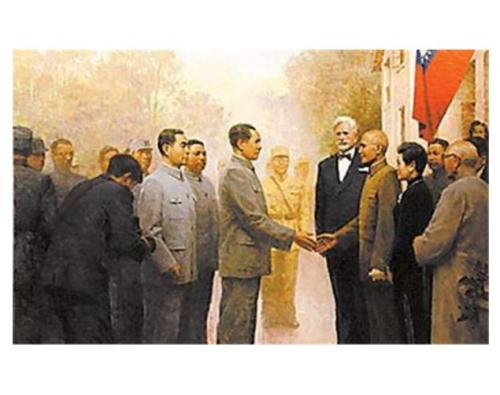

国共第一次合作

大革命时期，孙中山领导的国民党，是中国资产阶级民主派的主要代表。共产党要建立反帝反封建的革命统一战线，首先要同孙中山领导的国民党实行合作。1924年1月20日，国民党召开第一次全体大会，大会接受了共产国际驻华代表马林的“党内合作”的倡议，共产党员、青年团员加入国民党，把国民党改造成为革命阶级的联盟。
国共两党合作为特征的革命统一战线的建立，加速了中国革命的进程，在中国革命历史上出现了轰轰烈烈的大革命。但是到了大革命后期，1927年，由于蒋介石和汪精卫控制的国民党右派不顾以宋庆龄为代表的国民党左派的坚决反对，宣布与共产党决裂，发动了“四一二”、“七一五”反革命政变，公开叛变革命，致使第一次国共合作破裂。